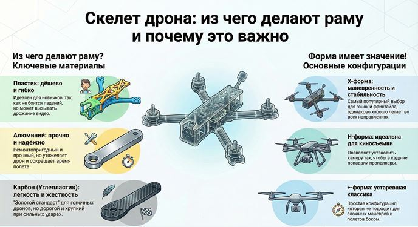
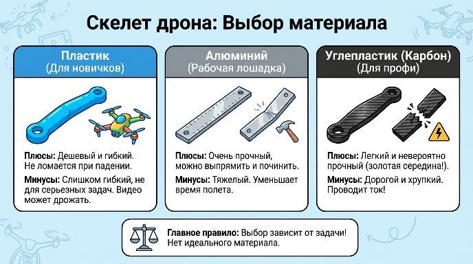
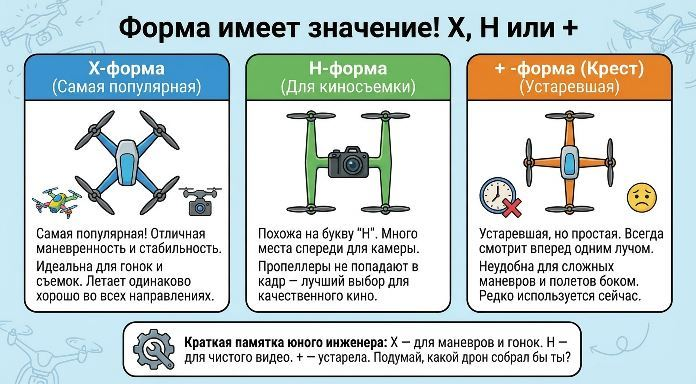
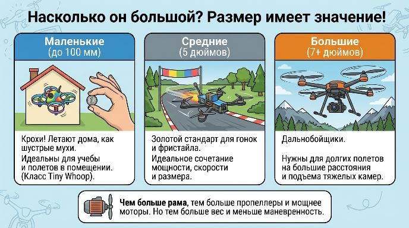

Скелет дрона: из чего делают раму и почему это важно
Привет! Ты когда-нибудь задумывался, почему одни дроны быстрые и верткие, как стрекозы, а другие большие и плавные? Всё начинается с основы — рамы. Это как скелет у живых существ. Сегодня мы узнаем, из чего его делают и как его форма влияет на полет.

Из чего делают раму дрона? Выбор материала
Представь, что тебе нужно сделать раму прочной, но невероятно легкой. Какие материалы ты выберешь?
✔ Пластик
На что похож: На крепкий и гибкий конструктор. Если уронить — он может погнуться, но не сломаться.
Плюсы: Дешевый и не боится падений. Идеален для новичков и маленьких дронов-игрушек.
Минусы: Он слишком гибкий для серьезных задач. Такой дрон будет болтаться на ветру, и видео получится дрожащим.
✔ Алюминий
На что похож: На прочную металлическую линейку. Его сложно согнуть, он жесткий и надежный.
Плюсы: Очень прочный и его можно починить если погнул. Часто используют для тренировочных и промышленных дронов.
Минусы: Он тяжелее пластика и карбона. А чем тяжелее рама, тем меньше время полета.
✔ Углепластик (Карбон)
На что похож: На супер-легкое и невероятно прочное стекловолокно. Это материал Формулы-1 болидов и современных дронов.
Плюсы: Золотая середина! Очень прочный, жесткий и при этом невероятно легкий. Именно из него делают гоночные дроны.
Минусы: Есть два больших «но»: он дорогой и хрупкий. При сильном ударе он не гнется, как алюминий, а трескается. И еще он проводит ток!
Главное правило: Не бывает идеального материала. Выбор зависит от того, для чего нужен дрон. Как выбрать кроссовки: для бега — одни, для прогулки — другие.

Форма имеет значение! X, H или +?
Посмотри на дрон сверху. Как расположены его лучи? Это и есть конфигурация, и она сильно влияет на поведение в воздухе.
✔ X-форма: Самая популярная! Представь букву «Х». Это дает ему отличную маневренность и стабильность. Почти все гоночные и съемочные дроны используют эту форму. Он одинаково хорошо летает во всех направлениях.
✔ H-форма: Похожа на букву «Н». Такая рама более вытянутая. Ее главный плюс — место спереди. Туда легко поставить камеру так, чтобы в кадр не попадали пропеллеры. Поэтому ее часто выбирают для киносъемки.
✔ + -форма (Крест): Устаревшая, но простая конфигурация. Дрон всегда смотрит вперед одним лучом. Раньше это было удобно, но для сложных маневров и полетов боком она не подходит.

Насколько он большой? Размер имеет значение!
Размер рамы измеряют по диагонали — расстоянию между двумя дальними моторами.
✔ Маленькие (до 100 мм): Крохи! Летают дома, как шустрые мухи. Например, класс Tiny Whoop.
✔ Средние (5 дюймов): Золотой стандарт для гонок и фристайла. Идеальное сочетание мощности, скорости и размера.
✔ Большие (7+ дюймов): Дальнобойщики. Нужны для долгих полетов на большие расстояния, чтобы нести камеру побольше.
Чем больше рама, тем больше пропеллеры и мощнее моторы. Но тем больше вес и меньше маневренность.

Краткая памятка юного инженера:
✔ Пластик — дешевый и ремонтопригодный для начинающих.
✔ Алюминий — прочный «рабочая лошадка» для серьезных задач.
✔ Карбон — легкий и жесткий для скорости и профессионалов.
✔ X-форма — для маневренности и стабильности.
✔ H-форма — для качественной съемки без пропеллеров в кадре.
Навигация по образовательному курсу
Урок 1. Мир дронов: история, виды и правила безопасности
Урок 2. Рама. Варианты исполнения.
Урок 3. Моторы, электродвигатели.
Урок 4. Пропеллеры.
Урок 5. Регулятор оборотов.
Урок 6. Контроллер полета (автопилот).
Урок 7. Приемник-передатчик (ПДУ).
Урок 8. Аккумуляторная батарея (АКБ). Виды и маркировка.
Урок 9. Вспомогательное оборудование.
Для перехода к следующему учебному материалу используйте кнопку «Вперед» в верхней навигации.